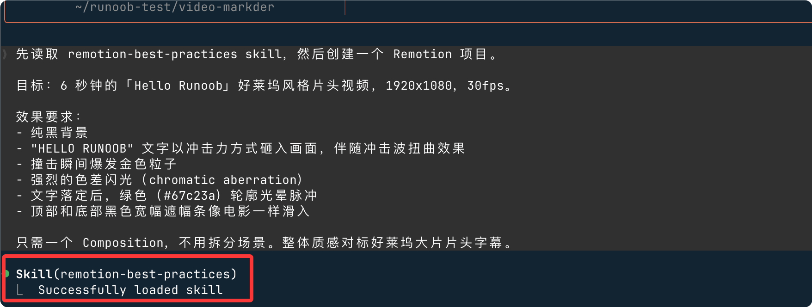
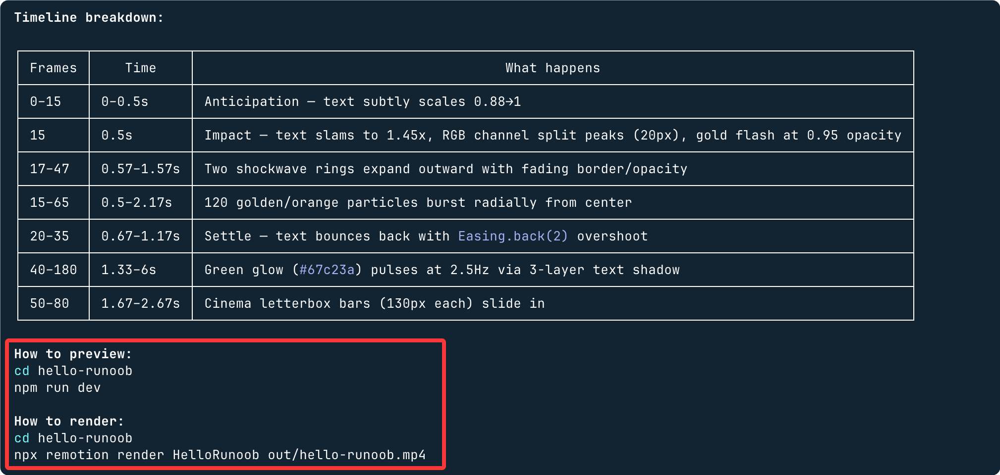
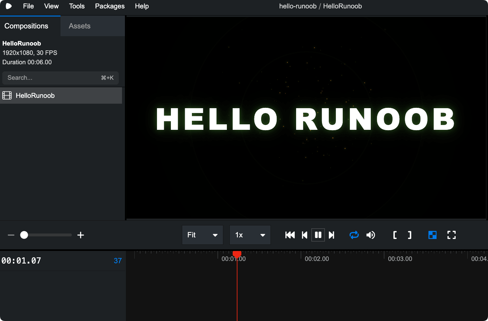
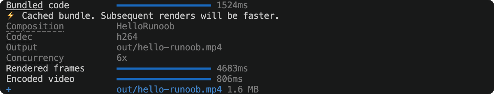
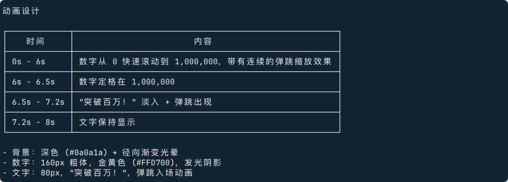
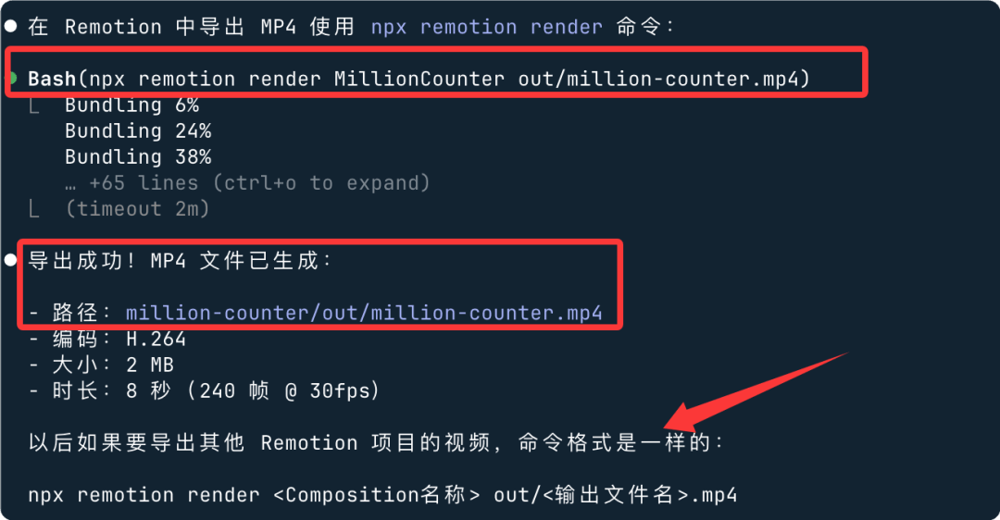

Claude Code と remotion-best-practices で動画を作成
この章では、ローカル環境で Claude Code と remotion-best-practices skill を組み合わせて、ゼロから Remotion プロモーションビデオプロジェクトを構築・生成する方法を紹介します。
事前準備
開始する前に、ローカル環境が以下の要件を満たしていることを確認してください。
| 依存項目 | バージョン要件 | 用途 |
|---|---|---|
| Node.js | >= 18.0 | Remotion と npm スクリプトの実行 |
| npm / pnpm | 最新安定版 | 依存パッケージ管理 |
| Claude Code | 最新版 | AI によるコード生成とプロジェクト構築の補助 |
| remotion-best-practices | skill としてインストール済み | Remotion プロジェクトの規範とテンプレートを提供 |
Claude Code のインストール
公式がワンクリックインストールスクリプトを提供しています。お使いのシステムに応じて対応するコマンドを実行してください。
macOS、Linux、WSL：
curl -fsSL https://claude.ai/install.sh | bash
Windows PowerShell：
irm https://claude.ai/install.ps1 | iex
Windows CMD：
curl -fsSL https://claude.ai/install.cmd -o install.cmd && install.cmd && del install.cmd
インストール完了後、成功したか確認します：
$ claude --version 2.1.142 (Claude Code)
初回実行時は Anthropic アカウントへのログインと認証が必要です。公式アカウントがない場合は、以下を参照してください。Claude Code API 設定
remotion-best-practices Skill のインストール
Skill は Claude Code の拡張機能パックであり、remotion-best-practices は Remotion プロジェクトのベストプラクティスとコードテンプレートをまとめたものです。
Skill とは
Skill は本質的に構造化されたプロンプト文書（SKILL.md）であり、Claude Code が読み込むことで、対応する分野の専門知識と規範の制約を取得できます。
remotion-best-practices skill には以下の内容が含まれています：
| 内容モジュール | 説明 |
|---|---|
| プロジェクトディレクトリ規範 | compositions、components、assets の標準的な階層構造を定義 |
| アニメーション API の使用方法 | interpolate、spring、useCurrentFrame の標準的な書き方 |
| パフォーマンスのベストプラクティス | 不要な再レンダリングの回避、静的リソースのプリロードなどの規範 |
| レンダリング設定テンプレート | codec、fps、解像度などの推奨パラメータの組み合わせ |
インストール方法
ターミナルでプロジェクトディレクトリに移動し、インストールコマンドを実行します：
npx skills add https://github.com/remotion-dev/skills --skill remotion-best-practices
インストールが成功したら、skill が認識されているか確認できます：
claude skills list
以下のような欄が表示されます：
Installed skills: - remotion-best-practices (active)
remotion-best-practices ソースコードのURL：https://github.com/remotion-dev/skills
Remotion プロジェクトの作成
すべての準備が完了したら、空のディレクトリで Claude Code を起動し、Prompt を渡してプロジェクトを自動構築させます。
Claude Code を起動して Prompt を渡す
ディレクトリを作成できますvideo-marker、そして移動します：
mkdir video-marker cd video-marker
プロジェクトディレクトリで実行します：
claude
対話画面に入ったら、以下の Prompt を貼り付けます：
先读取 remotion-best-practices skill，然后创建一个 Remotion 项目。 目标：6 秒钟的「Hello Runoob」好莱坞风格片头视频，1920x1080，30fps。 效果要求： - 纯黑背景 - "HELLO RUNOOB" 文字以冲击力方式砸入画面，伴随冲击波扭曲效果 - 撞击瞬间爆发金色粒子 - 强烈的色差闪光（chromatic aberration） - 文字落定后，绿色（#67c23a）轮廓光晕脉冲 - 顶部和底部黑色宽幅遮幅条像电影一样滑入 只需一个 Composition，不用拆分场景。整体质感对标好莱坞大片片头字幕。

あとは生成が完了するのを待つだけです～
完了すると、mp4 ファイルの生成方法が表示されます：

ブラウザプレビュー：
cd hello-runoob npm run dev
プレビュー結果：

mp4 生成：
cd hello-runoob npx remotion render HelloRunoob out/hello-runoob.mp4
エクスポート情報：

動画は out ディレクトリにあります：

Prompt で Claude Code に最初に skill を読み込むよう明示的に要求することで、生成されるコードはモデル自身のデフォルトの習慣に依存するのではなく、remotion-best-practices の規範に厳密に従うものになります。
Claude Code が行うこと
Claude Code は skill を読み込んだ後、自動的に以下の手順を実行します：
| 手順 | 操作 | 生成内容 |
|---|---|---|
| 1 | プロジェクトの初期化 | package.json、tsconfig.json、remotion.config.ts |
| 2 | ディレクトリ構造の作成 | src/compositions、src/components、src/assets |
| 3 | Scene コンポーネントの生成 | Intro.tsx、FeaturesScene.tsx、StatsScene.tsx、Outro.tsx |
| 4 | 汎用コンポーネントの生成 | TechCard.tsx、AnimatedCounter.tsx、CodeSnippet.tsx |
| 5 | Composition の登録 | Root.tsx で全シーンの連結を完了 |
その他の例
例1：数値増加アニメーション
帮我用 Remotion 创建一个 8 秒的视频。背景是深色，画面中央显示一个数字，从 0 逐渐增长到 1,000,000，数字有弹跳动画效果，最后定格时出现"突破百万！"的字样。字体要大，颜色用金黄色。 Claude Code 接到这个指令后会：

Claude 上で直接 AI にビデオのエクスポートを依頼できます：

生成された動画：

例2：製品発表カウントダウン
用 Remotion 做一个 15 秒的产品发布倒计时视频。从 10 倒数到 0，每个数字出现时有缩放+透明度的过渡动画，背景用黑色，数字用白色大字体，右上角有"NEW"红色徽章。倒计时结束时全屏出现产品名称"CLAUDE PRO"，字体要震撼。
生成された動画：

重要なポイント：Prompt は具体的であればあるほど良いです。時間、色、効果、テキスト内容を明確に記述すれば、Claude Code は一度で正確に実行できるため、何度も調整する必要はありません。
生成されたプロジェクト構造の理解
プロジェクトの構築が完了すると、ディレクトリ構造は次のようになります：
hello-runoob/
├── package.json
├── tsconfig.json
├── remotion.config.ts
└── src/
├── index.ts ← 入口，注册所有 Composition
├── Root.tsx ← 主 Composition，拼接所有场景
├── compositions/
│ ├── Intro.tsx ← 开场 Logo 动画
│ ├── ProblemScene.tsx ← 问题引入场景
│ ├── FeaturesScene.tsx ← 技术卡片展示
│ ├── StatsScene.tsx ← 数据统计场景
│ └── Outro.tsx ← 结尾 CTA
├── components/
│ ├── TechCard.tsx ← 单个技术卡片
│ ├── AnimatedCounter.tsx ← 数字滚动
│ └── CodeSnippet.tsx ← 代码块动画
└── assets/
├── colors.ts ← 品牌色常量
└── logo.svg

コアファイルの解説
Root.tsxビデオ全体の入り口であり、すべてのシーンがタイムライン順にここで連結されます：
Root.tsx の構造例
import { Composition } from "remotion";
import { HelloRunoob } from "./Composition";
export const RemotionRoot: React.FC = () => {
return (
<>
<Composition
id="HelloRunoob"
component={HelloRunoob}
durationInFrames={180}
fps={30}
width={1920}
height={1080}
/>
</>
);
};
メインビデオコンポーネント。Series を使用してシーンを順番に連結します:
const MainVideo = () => {
return (
<Series>
<Series.Sequence durationInFrames={90}> {/* 3秒 */}
<Intro />
</Series.Sequence>
<Series.Sequence durationInFrames={210}> {/* 7秒 */}
<FeaturesScene />
</Series.Sequence>
<Series.Sequence durationInFrames={450}> {/* 15秒 */}
<StatsScene />
</Series.Sequence>
<Series.Sequence durationInFrames={300}> {/* 10秒 */}
<Outro />
</Series.Sequence>
</Series>
);
};
依存関係のインストールとプレビュー
Claude Code がコードを生成したら、その指示に従って依存関係をインストールします：
npm install
Remotion Studio を起動してビデオのプレビューを確認します：
npx remotion studio
> runoob-promo@1.0.0 studio > remotion studio Remotion Studio running at http://localhost:3000
ブラウザが自動的に開きますhttp://localhost:3000、タイムラインをドラッグして各フレームの効果をリアルタイムでプレビューできます。
プレビュー中に特定のシーンのアニメーションが速すぎる、または遅すぎる場合は、Claude Code に「第2シーンのカードの入場アニメーションが速すぎるので、遅延を長くして」と直接伝えると、該当するコードを特定して修正します。
Claude Code で反復調整する
Remotion Studio でプレビュー中に問題が見つかった場合、Claude Code に自然言語で直接説明すれば、手動でコードを変更する必要はありません。
よくある調整シナリオ
| 問題の説明 | Claude Code に伝える方法 |
|---|---|
| カードアニメーションが速すぎる | FeaturesScene のカードの spring stiffness を 80 に下げる |
| 背景色が正しくない | すべてのシーンの背景色を #0d1117 に変更 |
| 数字カウンターが滑らかでない | StatsScene の AnimatedCounter に easeOutCubic のイージングを使用 |
| シーンを追加したい | StatsScene の後ろにオンラインインスタンス機能を紹介するシーンを10秒間追加 |
| 文字のフォントが小さすぎる | Intro.tsx のメインタイトルのフォントを 96px に変更 |
Claude Code のターミナルで問題を直接説明すると、対応するファイルを見つけて修正し、修正が完了すると Remotion Studio が自動的にホットリロードされます。
最終動画のレンダリング出力
結果に満足したら、MP4 ファイルにレンダリングします：
レンダリングコマンド
src/index.ts \ # エントリーファイル
RunoobPromo \ # Composition ID。Root.tsx 内のものと一致
out/runoob-promo.mp4 \ # 出力パス
--codec=h264 \ # コーデック形式。互換性が最も高い
--width=1920 \ # 出力幅
--height=1080 # 出力高さ
Rendering RunoobPromo (1800 frames) Progress: ████████████████████ 100% Rendered in 2m 34s → out/runoob-promo.mp4
Remotion のベストプラクティス：AI に作業を任せてより良い成果を得る
レンダリング速度はシーンの複雑さとマシンの性能に依存します。動画が長くエフェクトが多い場合は、以下を追加できます:--concurrency=4パラメータでマルチスレッド並列レンダリングを有効にすると、速度が3〜4倍向上します。
実際の使用では、動画の品質を大幅に向上させるテクニックがいくつかあります。これらの説明をプロンプトに加えると、効果が明らかに変わります：
🎬 フレームレートとサイズ
- Claude Code にどのプラットフォームに投稿するかを伝えます：抖音（Douyin）なら1080×1920 縦画面、B站（Bilibili）なら1920×1080 横画面、微信（WeChat）なら1:1 正方形。
- フレームレート（fps）は推奨として、30fps（滑らか）または60fps（超滑らか、ファイルサイズは大きくなります）。
🎞 アニメーションのリズム
- Remotion の
spring()関数で弾性アニメーションを作ると、線形アニメーションより10倍自然です。プロンプトで「弾性イージング効果を使用」と言ってください。 - 文字が一文字ずつ表示される場合、Claude に「stagger 遅延」を使うよう伝えてください。各文字を数フレーム間隔で順に表示します。
- 動画の冒頭と末尾に0.5秒のフェードイン/フェードアウトを追加すると、よりプロフェッショナルな印象になります。
🎨 ビジュアルの質感
- 背景は単色を使わず、Claude にグラデーションやグリッドテクスチャを使わせると、瞬時に質感が向上します。
- 字幕を追加するときは、テキストに
text-shadowを追加します。暗い背景に白い文字の方がはっきり見えます。 - データチャートには
@remotion/motion-blurプラグインを使用すると、動きのあるときにぼやけ感があり、より映画のショットのようになります。
⚡ レンダリング効率
- 開発段階では
npx remotion previewプレビューを使用し、満足してからレンダリングしてエクスポートすると時間を節約できます。 - 動画が長い場合は、Claude に
--concurrencyパラメータの並列レンダリングを有効にさせると、速度が数倍速くなります。 - 画像やフォントのリソースは
staticFile()を使用して参照し、パスエラーを回避します。
よくある質問
Claude Code が skill を読み込まない
生成されたコードが remotion-best-practices の規約に準拠していない場合、スキルが正しく読み込まれていないことを意味します。
プロンプトの先頭に次の文を明示的に追加してください：
skill を強制的に読み込ませる
Remotion Studio 起動時のエラー
よくある原因は Node.js のバージョンが低すぎることです。確認してアップグレードしてください：
Node.js のアップグレード
nvm install 20
nvm use 20
spring() アニメーションが最初のフレームしか表示されない
これは、frame - delayの値が負の場合、spring が 0 を返すためです。
clamp 保護を追加：
負のフレーム問題の修正
frame: Math.max(0, frame - delay), // 渡す値が負にならないようにする
fps,
config: { damping: 12, stiffness: 180 },
});
クリックしてノートをシェア
ノートはこの記事の内容を拡張したものである必要があります！
記事投稿は、ここをクリック
登録招待コードの取得方法
ノートを共有する前にログインが必要です！
登録招待コードの取得方法